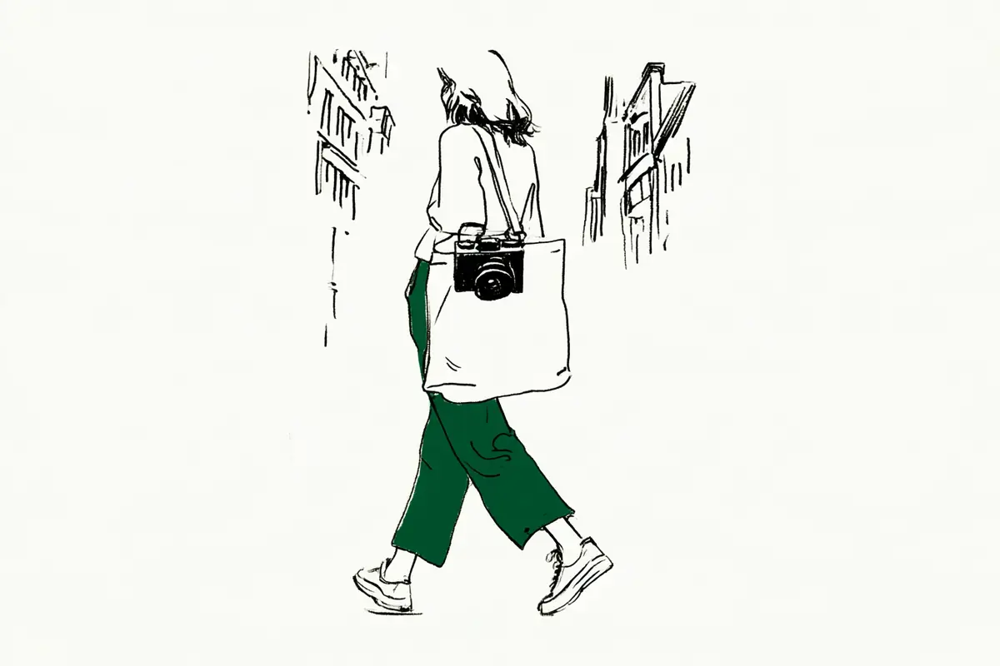
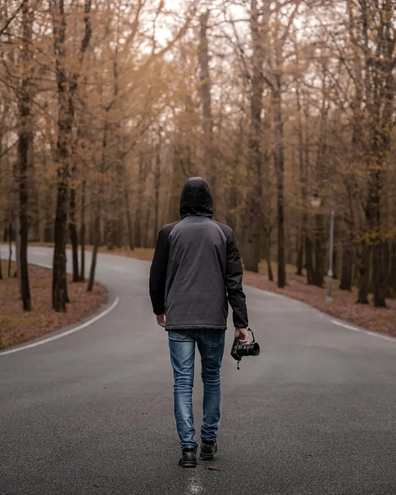

現在地: 続けるか迷ってる
カメラを持ち歩くのが恥ずかしいとき、人が試した工夫とその後

撮りたいものは目の前にあるのに、人がいるとカメラを出せない。何が恥ずかしいのかは人によって違い、試した工夫も違っていました。慣れた人もいれば、街ではカメラを使わなくなった人もいます。
私はカメラを持っていないので、ここにあるのは掲示板やnoteで読んだ26人の声と、私なりの読み分けです。カメラ趣味はやめとけ?の記事では、周りの目が恥ずかしいという理由を短くしか扱えなかったので、今回はそこだけを掘りました。
試した人がいたこと
お金がかからない順に並べました。私が勧めているのではなく、読んだ声の中に、実際にした人がいた工夫です。
- 撮る人が多い場所で撮る。 観光地なら平気、という線引きは複数の人にあり、実際に観光地で練習したのはタカフミさんの1人の例です。すすめている人も別にいます(人の目の節)
- 誰かと一緒に撮る。 子どもと散歩しながら撮る4-leafjunctionの方の1人の例。一人で撮りたい人には使えません(知り合い・家族の節)
- 目立つ場面だけスマホにして、カメラはバッグに。 2016年の価格.comで相談に答えた人と、動画を撮るtktk。さん、それぞれ1人の例です(知り合い・家族の節、その後の節)
- 人にレンズを向けない。撮るなら一言聞く。 青木詠一さんの1人の例と、メーカーのマナーページの話です(怪しまれる節、マナーの話)
- さっと構えてさっと撮る。むき出しのときはレンズキャップをつける。 価格.comの返信者、それぞれ1人の例です(怪しまれる節)
- 機材を小さくする。 お金がかかります。小さくした人は3人いますが、すすめている側の1人が9年目でもソワソワすると書いています。小さくしてもゼロにはならない例です(目立つ節)
恥ずかしさの中身は4つに分かれた
26人のうち、何が恥ずかしいかを私の読み方で4つのどれかに入れられたのは20人です。1人が2つ以上に入ることもあります。残りの6人は助言する側や気にしない側などで、中身の分類には入れていません。
| 恥ずかしさの中身 | 試した人がいた工夫 | その後の幅 |
|---|---|---|
| 人の目が気になる(10人) | 観光地で練習する、回数を重ねる、家の中から始める | 慣れた/9年目でもソワソワ/まだ途中 |
| 機材が目立つ・本気に見える(7人) | 小さいカメラやレンズにする、慣れ | 街ではミラーレスで撮る/慣れたが時々気が引ける/一眼レフも試そうか考え中 |
| 怪しまれる・人に向けにくい(6人) | 人にレンズを向けない、開き直る、あえて見せる | 解決していない/開き直った/街では使わなくなった |
| 知り合い・家族の目(1人) | 普通のバッグに入れ、目立つ場面はスマホ | 使い分けている |
材料には偏りがあります。26人のうち7人は2016年の価格.comの同じ相談からで、掲示板と知恵袋は2011〜2016年が中心です。ただ、2019年以降のnoteやブログにも同じ中身がありました。スマホで撮る人が増えたいまは、スマホは平気でカメラらしい見た目のほうが気になる、という声もあります(tktk。さん、2020年)。
街中で人の目が気になる、人前で構えるのが恥ずかしい
誰に何か言われたわけでもないのに視線を感じる、という声です。2016年に価格.comで相談した人は、入門向けの一眼レフ(鏡を使ってのぞくタイプのカメラ。言葉の意味)を買ったものの、観光地と山と冬の海以外ではむき出しで持ち歩けないのが悩みでした。
町中でぜんぜんそうしてる人を見ないのでやはりそういうのは非常識なんでしょうか。
返信は95件つきましたが、本人のその後の書き込みはありません。
2013年のYahoo!知恵袋にも、観光地なら苦にならないのに、それ以外の人通りのある場所では人の目が気になって撮れない、という質問があります(知恵袋の質問)。
構える動作そのものが恥ずかしい、という人もいます。2011年の知恵袋の質問です。
一人で景色を撮る姿を人に見せたくありません。
初めから首から下げてしまえば気にならない、という回答に、質問した人は自然体が一番だと納得しています。実際にそうしたかは書かれていません。
観光地なら平気、という線引きは上の2人に共通です。実際に観光地で練習したのが、SnapDaysのタカフミさんです。
カメラを始めたばかりの頃の僕は楽しさよりも恥ずかしさが勝っていました。
人気の観光地で練習を重ね、撮ることに夢中になると気にならなくなった、と振り返っています。ねひらさんも、撮る人が来る前提の撮影スポットで場数を踏むことをすすめています(ねひらさんのnote)。読者への助言で、本人の体験は、最初の頃は家の中でしか撮っていなかった、という一文だけです。
慣れ方には幅があります。価格.comの同じ相談の別の人は、始めた頃はためらったが今はあまり気にしない、と短く触れるだけです。街中で人や風景を気負わず撮るストリートスナップが中心の真・写真手帖さんは、記事の冒頭をこう始めています。
写真を初めて9年目でも未だにソワソワしますが、初期の頃よりはだいぶ慣れました…
9年たっても、ゼロにはなっていない例です。
一眼が大きくて目立つ、本気の人に見える
一眼(レンズを交換できるカメラ。一眼レフとミラーレスの両方)の大きさに原因を置いている人は7人です。平日は街で撮っているkiokucameraさん(商品の紹介もしているサイトです)は、一眼レフの仰々しい形と大きなシャッター音が街中では目立つと感じています。
それでも、街中で撮りたいから、機材のチョイスは自然と少しでも小ぶりでシャッター音の小さなカメラへと手が伸びていった。
この記事の時点では、一眼レフも街で使ってみようかと傾いているところでした。
小さいカメラやレンズにした人は、この方のほかに2人です。価格.comの同じ相談の別の人は、街中用にミラーレス(センサーが見た映像を画面でのぞくタイプ)を買い足し、街ではそれで撮っています。モノスクラムの運営者の方(カメラレンタルの紹介もしているサイトです)がしたのは3つです。撮影場所を変え、細いストラップとバッグを使い、カメラをクラシックな外観の機種に替えた、と(モノスクラムの記事)。今は全く気にならない、というのは本人の申告です。
すすめている人も2人います。先ほどの真・写真手帖さんは、コツの1つとして小さいカメラがいいと挙げています。ただ、9年目でもソワソワすると書いたのも同じ人なので、小さくすれば消える、とは読めませんでした。目立つのとは別に、重くて持ち出さなくなった人のその後は一眼レフが重くて使わなくなった…にまとめています。タカフミさんは、最初は大きな機材で挑んで、慣れないうちはかえって目立っていた気がする、と振り返り、小さめのレンズをすすめています。
大きさには、別の恥ずかしさもついてきます。価格.comの同じ相談に、慣れて一人でも撮れるようになったと書く人がいます。今も気が引ける場面として挙げていたのは、大きいカメラだと本気の人やその場所の常連と思われることでした(その返信)。目立つこと全般より、本気の人と見られることを挙げている例です(私の読み方)。
2013年の知恵袋には、高校生の回答者もいます。少し前、誰も来ない場所で鉄道を撮る準備中、ウォーキングの人が見えて別の道に隠れたそうです。大きいカメラを持った高校生だと思われそうで、という理由です。そのときの自分を振り返って、こう続けています。
まぁ、こんなこと考えているのことじたい被害妄想だと思います。
怪しまれる・盗撮と思われそうで、人にカメラを向けにくい
恥ずかしいというより怪しまれるので気が引ける、と言い直す人が4人(威圧感を気にした人を含めると5人)いました。価格.comの相談への返信の1人です。
僕の場合「恥ずかしい」と言うよりは「怪しまれるので気が引ける」というのが正解ですかね。
観光地以外の街中や住宅地で、大きいカメラや望遠ズーム(遠くを大きく写すレンズ)を使っていると、何を撮っているのかと思われる、と続きます。
noteの青木詠一さんは、近所の公園で花を撮っているときに、保護者の視線を感じています。
たぶん私は不審者に映っている。
できるだけ子どもにレンズを向けないようにしているが、それでも視線を感じる、とあり、記事の中で解決はしていません。妻に毎回、職務質問されないようにと言われる、という締めでした。
札幌で街撮りをするYM.さんは、街で撮ることは不審者になることだ、と書き出し、極端なことを言っているだろうか、と続けています。コメント欄で、一人で街角スナップをしていると時折職務質問される、と書いた人への返信がこれです。
街撮り＝不審人物扱いはすでに諦めているので、最近は開き直って撮影しています。
職務質問の話は1人の申告で、理由は分かりません。
開き直った人がいる一方で、逆の選択をした人もいます。2013年の価格.comには、近所で他人が首から下げた一眼レフに不快感があり、自分は必ずバッグにしまう、という相談があります(価格.comの相談)。答えた1人は、威圧感を与えるのもそう見られるのも嫌で、街中では一眼を使わなくなった、と。
借りた一眼レフで初めて原宿で撮った人は、人に向けるのが気まずくて上ばかり撮り、人混みを外れた場所で試していました(シーカーベースの記事)。記事の後半では、恥ずかしさより重さが主な悩みです。
小さな工夫も、同じ2016年の相談の返信にあります。さっと構えてさっと撮り、同じ人を何度も撮らない、という人と、むき出しで持ち歩くときはレンズキャップをつけて撮るときだけ外す、という人です。それぞれ1人の例です。
首から下げるのは素人? 隠す人と、あえて見せる人
ここまでは隠す方向の工夫でしたが、逆向きの人もいます。2013年の知恵袋の回答者の1人は、基本的には恥ずかしいと認めたうえで、使う使わないに関係なく首からカメラを下げ、三脚も持つのだそうです。周りがそういう人だと納得してくれるから、という理屈です。
中途半端な状態が一番はずかしいです。
2013年の価格.comの相談にも、あえてカメラを見せている人がいました。
考え方の違いだと思うのですが、私は逆に積極的にカメラの存在をアピールしています。
見せていれば撮られる側が反応できる、という考え方です。隠す人と見せる人、どちらも撮られる側の受け止めを気にしていました。
首から下げるのは素人だと言われた、という2021年の知恵袋の質問もあります(知恵袋の質問)。恥ずかしさの相談ではなく本当かどうかを聞いたもので、回答はほぼ全員が、首から下げるのが普通、好みの問題、でした。
心配が1つ減る話: メーカーのマナーページ
怪しまれる心配の裏には、撮られる側に迷惑では、という気持ちがあると思います。撮る前に確かめることが決まっていれば、心配が1つ減ります。どこまで撮ってよいかの法律の線引きは、国や弁護士会などの説明を今回は確認していないので、この記事では扱いません。代わりに、メーカーのマナーのページを読みました。
ニコンのページは、人物やペットを撮りたいときは本人に撮影の許可を取るように、と書いています。未成年なら保護者、ペットなら飼い主です(ニコンの基本的な撮影マナーのページ、監修 上田晃司)。これはニコン自身の推奨で、法律の説明ではありません。キヤノンの撮影マナーガイドは、撮影できる場所かどうかを確認することを挙げています。人物や持ち物が写り込むときは第三者の権利への配慮が必要だ、とも。
カメラ販売店のキタムラが運営する写真教室のページには、声掛けの項があります。
道を歩いていていきなりカメラを向けられれば、誰でも驚き、不快な思いをするでしょう。
一言聞くだけで、撮ってよいかどうかの確認が取れる、と続きます。撮影禁止の場所や店は事前に確かめるように、と書いた個人ブログもありました(タカの趣味BLOG、2020年)。学校や施設にはそれぞれのルールもあります。法的に問題になるかの判断が必要なときは、専門家や公的な窓口に聞くのが確かだと思います。
知り合いや家族の目
知らない人の視線より、知っている人の目のほうがつらい、という声もあります。価格.comの同じ相談の返信の1人は、地元で撮ると知り合いに会って何をしているのかと聞かれかねない、家族が嫌がることもある、と書いていました。学校行事では、親が目立って子どもが恥ずかしくないかとも。この方がしているのは、大きめの普通のバッグに一眼レフを入れておき、目立つ場面ではスマホで撮る、という使い分けです。スマホとカメラでどこに差が出るかは、スマホで十分?で整理しています。
同じ相談には、自分は恥ずかしくないが横にいる妻は恥ずかしいそうだ、と書いた人もいます。本人は平気でも、家族がそうとは限らない例です。
逆に、家族と一緒だと出しやすい、という人もいます。田舎町で建物を撮っている4-leafjunctionの管理人の方(商品の紹介もしているサイトです)は、最近は子どもと散歩しながら撮っています。
子どもがいるだけで、「子どもの写真を撮っている」という意識になるため周囲の目が気にならなくなります。
同じ相談にも、一人のときはカメラを表に出さないが子どもと一緒なら出しやすい、という人がいます。一人で撮りたい人には使えない工夫です。
慣れる? 慣れた人と、街では使わなくなった人

乗り越えた・慣れた側だと私が読んだ人は7人です(うち1人はカメラレンタルの紹介もしているサイトの書き手)。中身には幅があり、今はあまり気にしない人から、9年目でもソワソワする、時々気が引ける、と残る部分を書く人までいます。
途中の人もいます。街中で動画を回す恥ずかしさを書いたtktk。さんは、一回やれば二回目は少し気楽になる、と回数を重ねている最中です。
周りは気にしてないのは知ってるんだけどね。
スマホはだいぶできるようになったが、カメラらしい見た目のものはまだきつい、という現状でした。
逆の方向もあります。街中では一眼を使わなくなった人は、前の節に1人いました。2016年の相談には、少年時代は持っているのが嬉しかったが、慣れるにつれて必要なとき以外はバッグにしまうようになった、という人もいます。慣れたら平気になる、の逆です。同じ相談には、恥ずかしいなら持ち歩かなくていい、気楽に撮れる場所で撮ればいい、という返信もあります。相談した本人に向けた、無理に慣れなくていい側の言葉だと私は読みました。
気にしない側の声もあります。2023年の知恵袋には、なぜ恥ずかしくないのかと聞いた質問があります(知恵袋の質問)。回答の多くはなぜ恥ずかしいのかと聞き返すもので、他人は大して気にしていない、悪いことはしていない、といった理由が並びます。気にしない側から見えている景色で、感じている側の気持ちを打ち消すものではないと思います。
慣れるのも、街では使わないのも
慣れるまで続けた人と、街では使わなくなった人の、どちらの声もありました。どちらを選んでもいいと思います。ねひらさんのnoteなどに、この理由でやめてしまう人も多い、という一文はありますが、根拠は示されていません。読んだ26人の中に、恥ずかしさが理由でカメラそのものをやめた、と書いている本人は見つかりませんでした。ネットに書いていないだけかもしれません。ただ、2011年の質問にも2025年の記事にも、同じところで止まっていた人はいました。
次に読むなら
この記事で使った20件
- 価格.com クチコミ掲示板「一眼レフを持ち歩くのが恥ずかしいです」(相談した本人と返信者、2016年)
- 価格.com クチコミ掲示板「一眼レフをむき出しで散歩！」(見る側からの相談と返信者、2013年)
- Yahoo!知恵袋「人がいる場所での写真撮影って恥ずかしくないですか？」(質問した本人と回答者、2013年)
- Yahoo!知恵袋「散歩中に風景写真を撮るとき恥ずかしい」(質問した本人と回答者、2011年)
- Yahoo!知恵袋「カメラにストラップ付けても首にぶら下げるのは素人と言われました。」(質問した本人と回答者、2021年)
- Yahoo!知恵袋「皆さんはなぜ一眼レフを持ち歩いて恥ずかしくないのですか。」(気にしない側の回答者、2023年)
- note(青木詠一)「カメラ持ち歩き恥ずかしい問題。」(感じている本人、2019年)
- note(ねひら)「フォトウォークは恥ずかしい？」(撮影スポットをすすめている人、2022年)
- note(tktk。)「カメラを街中でまわすメンタルをもっと身に着けたい。」(途中の人、動画撮影、2020年)
- note(真・写真手帖〈極伝〉)「街でカメラを構えるのが気恥ずかしい現象と克服術」(だいぶ慣れた人、2021年)
- SnapDays(タカフミ)「街でカメラを構えるのが恥ずかしい？その原因と対処法を解説！」(慣れた人、2025年。自分のレンズのレビュー記事への内部リンクあり)
- モノスクラム「「カメラが趣味だけど持ち歩くの恥ずかしい」そんな人に送る3つの解決策」(慣れた人、2025年。アフィリエイト広告あり、カメラやストラップの紹介あり)
- 4-leafjunction「カメラ片手に散歩するのは恥ずかしい？撮影を楽しみながら歩く方法」(工夫で軽くなった人、2025年。広告リンクあり)
- シーカーベース「初めての一眼レフカメラを外で撮影して僕が苦心した理由」(初めて外で撮った人、2016年)
- YM-PHOTO BLOG(YM.)「街で写真を撮るということ。」(開き直った人と、コメント欄の職務質問の話、2021年。広告ラベルあり)
- 記憶カメラ(kiokucamera)「来年は街撮りスナップに一眼レフたちを連れ出そうかと考えてるんだ。」(小さいカメラを選んできた人、2019年。アフィリエイト広告あり)
- タカの趣味BLOG(タカ)「一眼カメラを買ったけど、持ち歩くのが恥ずかしい。」(助言中心の記事、2020年。広告枠あり)
- ニコン「基本的な撮影マナー」(メーカー公式、監修 上田晃司)
- キヤノン「撮影マナーガイド」(メーカー公式)
- カメラのキタムラ写真教室「写真撮影マナー二十四か条」(カメラ販売店が運営する写真教室のページ)
引用は2026-10-02時点で各ページを閲覧して確認しました。